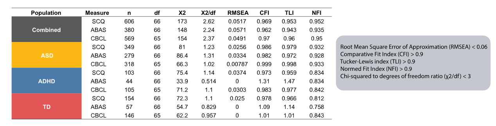

Investigating the determinants of social communication differences in neurodevelopmental disoders
Thesis Defense
Contact MeIntroduction

Social communication differences in Autism Spectrum Disorder (ASD)
- Social communication differences are a core diagnostic domain of ASD.
- These differences can negatively impact academic, mental health, employment, and quality of life outcomes for children and youth with ASD
- There is an emerging body of literature identifying several such factors that predict social communication.
-
Howlin, P. Autism and developmental receptive language disorder - A follow up comparison in early adult life. Social, behavioural, and psychiatric outcomes. J. Neurol. Neurosurg. PSYCHIATRY 72, 826 (2002).
-
Hong, J., Bishop-Fitzpatrick, L., Smith, L. E., Greenberg, J. S. & Mailick, M. R. Factors Associated with Subjective Quality of Life of Adults with Autism Spectrum Disorder: Self-Report Versus Maternal Reports. J. Autism Dev. Disord. 46, 1368–1378 (2016).
-
Spence, S. H., Donovan, C. & Brechman-Toussaint, M. Social skills, social outcomes, and cognitive features of childhood social phobia. J. Abnorm. Psychol. 108, 211–221 (1999).
Determinants of Social Communication
-
Evans, S. C., Boan, A. D., Bradley, C. & Carpenter, L. A. Sex/Gender Differences in Screening for Autism Spectrum Disorder: Implications for Evidence-Based Assessment. J. Clin. Child Adolesc. Psychol. 48, 840–854 (2019).
-
Chaidez, V., Hansen, R. L. & Hertz-Picciotto, I. Autism spectrum disorders in Hispanics and non-Hispanics. Autism 16, 381–397 (2012).
-
Qi, C. H., Kaiser, A. P., Marley, S. C. & Milan, S. Performance of African American Preschool Children From Low-Income Families on Expressive Language Measures. Top. Early Child. Spec. Educ. 32, 175–184 (2012).
-
Kenworthy, L., Case, L., Harms, M. B., Martin, A. & Wallace, G. L. Adaptive Behavior Ratings Correlate with Symptomatology and IQ Among Individuals with High-Functioning Autism Spectrum Disorders. J. Autism Dev. Disord. 40, 416–423 (2010).
-
Kojovic, N., Ben Hadid, L., Franchini, M. & Schaer, M. Sensory processing issues and their association with social difficulties in children with autism spectrum disorders. J. Clin. Med. 8, (2019).
-
Constantino, J. N. et al. Clarifying the associations between language and social development in autism: A study of non-native phoneme recognition. J. AUTISM Dev. Disord. 37, 1256–1263 (2007).
-
Charman, T. et al. Predicting language outcome in infants with autism and pervasive developmental disorder. Int. J. Lang. Commun. Disord. 38, 265–285 (2003).
Gaps in Literature

1. Studies do not explore the combined effect of factors
Studies often look at the individual contribution of each factor on social communication.
2. Correlations between factors are not considered
Since the factors are studied individually, the correlation between factors are not taken into account. However, many of these factors are correlated (e.g, IQ and language; Anxiety, RRBs and sensory profile)
3. Different measures of social communication
In the literature, different measures of, and therefore, constructs of social communication are being predicted. We need to compare factors using consistent measures.
-
Lidstone, J. et al. Relations among restricted and repetitive behaviors, anxiety and sensory features in children with autism spectrum disorders. Research in Autism Spectrum Disorders 8, 82-92 (2014).
-
Ribeiro de Oliveira, L. et al. Exploring the use of the verbal intelligence quotient as a proxy for language ability in autism spectrum disorder. Research in Autism Spectrum Disorders 73, 101548 (2020).
Objectives
Our primary objective was to determine the differential contribution of demographics (sex, race/ethnicity, and socioeconomic status), IQ, sensory processing, attention, anxiety, language, and restricted, repetitive behaviours to social communication differences as measured in the SCQ, ABAS and CBCL in a pooled sample of individuals with ASD, ADHD, and typical development.
Our exploratory objective was to evaluate how diagnostic group (ASD, ADHD, and typical development) impacts which factors contribute to social communication through multigroup analysis.
Theoretical Model
Methods
Participants
- We included participants from the Province of Ontario Neurodevelopmental Disorders (POND) network, a multi-centre research network that studies neurodevelopmental disorders.
- Our total sample population included 2551 children and youth with diagnoses of autism spectrum disorder (ASD, n=1194), and attention-deficit/hyperactivity disorder (ADHD, n=1065). We also included typically developing (TD, n=292) individuals as a comparison group.
Measures

-
Rutter, M., Bailey, A. & Lord, C. The social communication questionnaire: Manual. (Western Psychological Services, 2003).
-
Ditterline, J. Adaptive Behavior Assessment System–Second Edition. Encycl. Spec. Educ. 48–49 (2008).
-
Achenbach, T. M. & Edelbrock, C. S. Manual for the child behavior checklist and revised child behavior profile. (1983).
-
Stano, J. F. Wechsler abbreviated scale of intelligence. Rehabil. Couns. Bull. 48, 56 (2004).
-
Wechsler, D. WASI-II: Wechsler abbreviated scale of intelligence. (PsychCorp, 2011).
-
Wechsler, D. WISC-IV and WISC-V Wechsler intelligence scale for children. (Pearson, 2014).
-
Wechsler, D. Wechsler preschool and primary scale of intelligence—fourth edition. Psychol. Corp. San Antonio TX (2012).
-
Roid, G. H. & Miller, L. J. Leiter international performance scale-revised (Leiter-R). Wood Dale IL Stoelting (1997).
-
Dunn, W. Sensory profile. vol. 555 (Psychological Corporation San Antonio, TX, 1999).
-
Carrow-Woolfolk, E. OWLS-II: Oral and Written Language Scales. (Western Psychological Services, 2011).
Methods
Data Processing
Data Cleaning
- Duplicate participants (e.g., from longitudinal studies) were removed.
- A pairwise deletion approach, where a participants are removed on a per-test basis, was chosen to maximize statistical power given our multifactor hypotheses.
- Depending on the hypotheses and statistical test, sample size varied and was reported per analytical test.
Structural Equation Modeling (SEM) Analysis

Fit and Confirm Model
- Using semopy, a Python statistical package for SEM, we specified and fit a theoretical path model.
- Fit indices were used to evaluate goodness of fit.
Distill Significant Factors
- To evaluate the significance of the parameters within the models, we first controlled for multiplicity when conducting SEM using the false discovery rate (FDR) procedure.
-
Igolkina, A. A. & Meshcheryakov, G. semopy: A Python Package for Structural Equation Modeling. Struct. Equ. Model. Multidiscip. J. 27, 952–963 (2020).
-
Cribbie, R. A. Multiplicity Control in Structural Equation Modeling. Struct. Equ. Model. Multidiscip. J. 14, 98–112 (2007).

Results
Participant Characteristics
- In terms of demographics, the TD group was the oldest, had the greatest caregiver education and household income.
- The ASD group had the most differences in all other factors, with the exception of Attention problems
- As expected, the ASD group has the most social communication differences.
SEM Analysis
SEM Model Fit
- Based on the fit statistics, models for the three social communication measures with the combined population fit well.
- The sample size for SCQ and CBCL were compariable. However, ABAS models had a much smaller sample size.
SCQ Model
- Unsuprisingly, ↑ RRBs and ↑ sensory differences were predictive of ↑ ASD-like social and communication features.
- ↓ Language and ↑ age were also contributors to ↑ of both social and communication subscales.
- Additionally, ↑ SES was a predictor of ↑ social features of ASD, and male sex and ↑ attention differences was a predictor of ↑ communication features of ASD
ABAS Model
- Both ↓ attention differences and ↑ IQ were preditive of ↑ adaptive social and communication skills.
- ↓ RSMB , but not IS , was a significant parameter for both ↑ social and communcation subscales scores.
- Male sex was a predictor of ↑ social adaptive functioning.
- ↑ Language and ↑ age were also predictors ↑ adaptive communication.
CBCL Model
- Problems in other domains (i.e., ↑ attention differences and ↑ anxiety), were most predictive of social differences.
- Other factors related to ASD symptomology (i.e., ↑sensory differences and ↑ IS) are also predictive.
- NB: Attention, anxiety and social problems are all measured using the CBCL, which may account for the high predictive power.
SEM Measure Comparison
Key Finding: the predictive factors varied based on the construct of social communication.
Discussion
The SEM analysis suggests that factors are sensitive to the constructs of social communication being measured
- Across all measures of social communcation, white race was not a predictive factor.
- The factors that were predictive of social communication differed greatly depending on the constructs being measured.
- For the SCQ, other symptoms of ASD were predictive factors of social communication symptoms
- For the ABAS, factors that have a well-documented association adpative functioning (i.e, IQ and attention) were significant
- For the CBCL, problems in other domains were associated with social problems.
Practical implications
Across all three models, multiple factors were associated with social communication differences
Rather than one common pathway, social communication differences could be a cumulative manifestation of differences in a variety of areas.
Identification of supports
- Our results can ultimately lead to the identification of areas where environmental and social supports can be implemented to increase the participation and inclusion of children with ASD. For example:
- For individuals where sensory differences impact social communication, identification and supporting sensory triggers may be helpful.
- In individuals where language ability impacts social communication skills, speech and language supports may be used.
Limitations
Limitations
Use of caregiver-reported questionnaires
- We used caregiver-reported questionnaires (SCQ, CBCL, ABAS) rather than observational clinician measures (ADOS) to assess social communication difficulties. Our results may be skewed by caregiver perception
- Future work could include observational measures and self-reported questionnaires.
Selection of measures for each factor
- There are limitations based on the measures we chose for each factor.
- For example, the CBCL was used as a measure of anxiety and attention, which might account for the strong predictive power of these two factors in the CBCL model.
- Another limitation was the use of total scores (for anxiety, attention, sensory profile), rather than subscales.
Existence of alternative SEM models
- The choice to analyze data from a non-experimental design using SEM also has limitations.
- We only tested a single theoretical model, but multiple alternative models may exist and better explain the variance in social communication scores.
Conclusion
This work represents a preliminary step in understanding the determinants of social communication differences.
Ultimately, by understanding the factors that contribute to social communication, we hope to be able to target specific skills or behaviours and to create personalized supports for individuals with ASD.
We put forth a theoretical model based on literature that explains the variability in social communication well; however, it will need to be replicated on separate datasets, and alternative models need to be considered.
Despite this study's limitations, a key takeaway of this work is appreciating the factor sensitivity to different constructs of social communication. Future studies looking to explore determinants of social communication should keep this construct-specific sensitivity in mind.
Thank you for listening!
If you have any questions feel free to email me here.
Appendix
Pairwise Comparisons
We individually tested the pairwise associations between each factor with the measures of social communication to see if the correlations were consistent with the literature.
Pearson Correlation
- For continuous variables, the pairwise associations among factors as well as measures of social communication were examined using Pearson's correlations and corrected for multiple comparisons using the Bonferroni method.

Unpaired T-test
- For binary factors (i.e, male sex and white ethnicity), unpaired t-tests along with Bonferroni correction were used to quantify each factor's impact on the measures of social communication.
The pairwise comparisons largely support the findings in the literature
- Through pairwise comparisons, we were able to confirm many of the associations reported in the literature.
- In line with the literature, cognitive impairment, language difficulties, sensory atypicalities, attention problems, and RRBs were found to be associated with social communication difficulties on the SCQ, ABAS, and CBCL.
- The impact of sex on social communication difficulties has largely been mixed. Researchers have evidence to support that males have more social communication difficulties than females, as well as the opposite. Some studies have found no effect of sex. In our combined sample, males had significantly greater social communicative difficulties across all three measures, this sex-difference did not hold in the ASD-only group.
- The directionality of the association between age and social communication changed based on the measure.
- Greater caregiver education was associated with less social communication difficulties on the SCQ and CBCL, but not significantly associated with the ABAS.
- Factors relating to SES tended to be weak correlates.
SEM Multigroup Analysis
Changes
Previous SEM Method
Exploratory Approach: Model Trimming
- Originally, we used a model trimming approach where we progressively tweaked the model by removing factors to iteratively improve the fit.
- The chi-squared difference test as well as goodness of fit was used to compare whether our alternative models fit significantly better or worse than our hypothesized models.
- However, when we added our covariates, the significant factors changed dramatically. The lack of stability of the factors as well as the sensitivity to covariates made us decide against using this method.
- Alternatively, when we progressively removed one factor from the model, we also removed the covariate (e.g., removing language, also removed the correlation between language and IQ)
- The model trimming approach required testing many alternative models (i.e., 200+ models). Our sample size was not large enough, and we did not have sufficient statistical power after accounting for multiple comparisons.
New SEM Method
Confirmatory Approach: Model Testing
- Instead, we've decided to use a confirmatory approach where we test the same model for goodness of fit.
- Since we are testing the same model in 4 sample groups and using 3 measures of social communication, we are running a total of 12 model. Thus, the number of models ran is more proportional to our sample size.
- If a model has good fit, we can then look at the factors that contribute significantly to it to determine which factors have predictive power.
- In our model, instead of using a composite score for social communication, we have separated it into social and communication parameter. This is more in line with literature, as factors such as language can be differentially associated with social and communication difficulties.